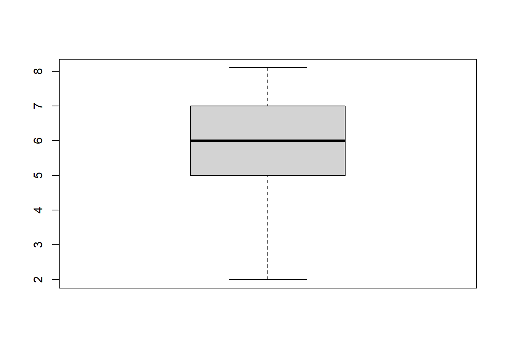
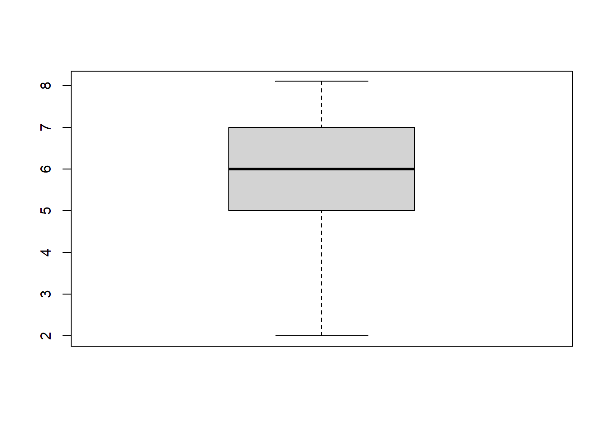
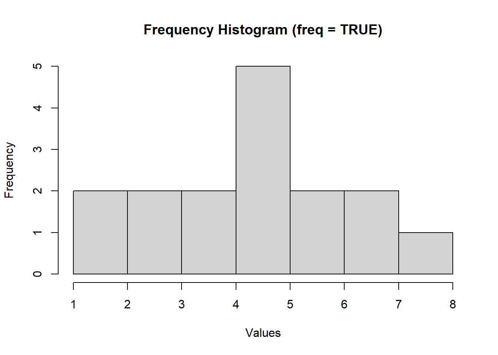
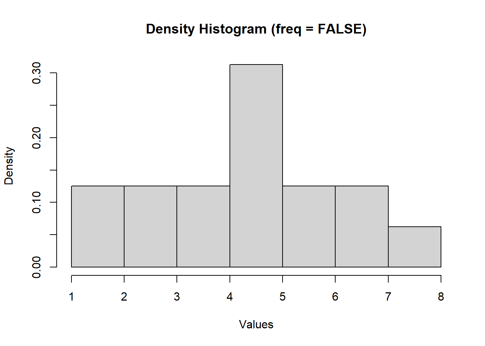
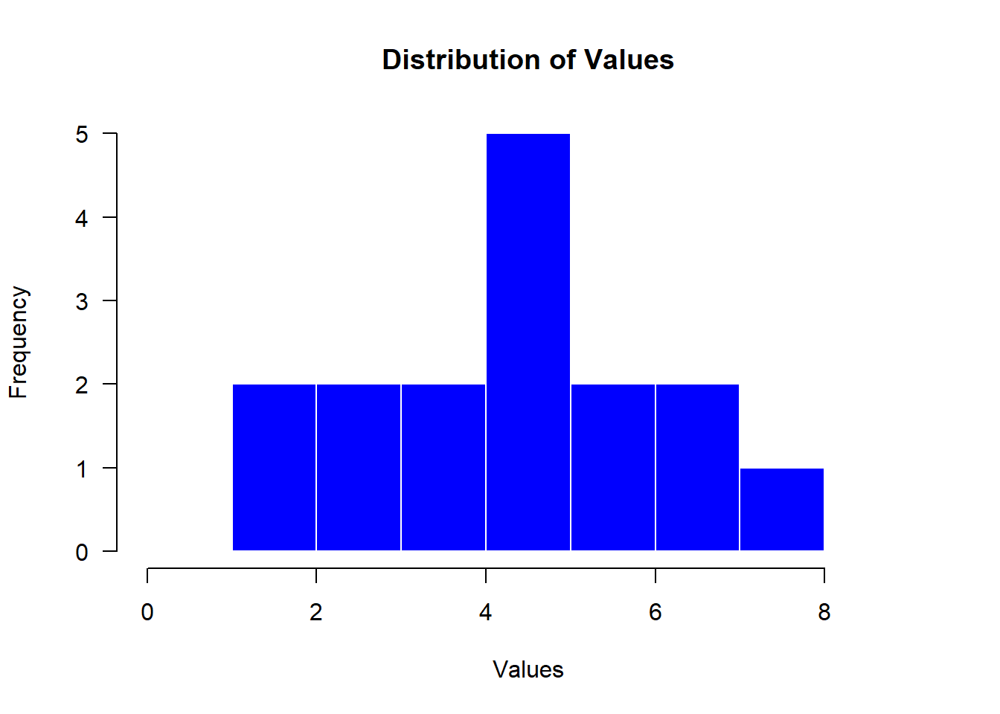

# without a y-axis label this is not a good graph
boxplot(x = c(2, 6, 7, 8.1, 5, 6))

By the end of this lesson, you will be able to:
The garage and toolbox metaphors
One of the best things about R is that it can be customized to accomplish a huge variety of kinds of tasks: perform all sorts of statistical analyses from simple to bleeding edge, produce professional graphs, format analyses into presentations, manuscripts and web pages, collaboration, GIS and mapping, and a lot more. The tools themselves are contained in toolboxes and in a given toolbox, the tools are related to each other, usually in a focus to the kind of tasks they are suited for.
The tools in
Rare functions, and the toolboxes are packages.
While R comes with a lot of packages, there is an enormous amount available for instant download at any time you want or need them (over 18,000 different packages at the moment…). Making use of all these resources is usually a case of identifying a problem to solve, finding the package that can help you, and then learning how to use the functions in the package This page is all about introducing functions, packages and the R help system.
Think of functions in
Ras tools that do work for you.
Code for functions is is simple once you get the idea, but you have to understand how they work to use them in the most powerful way. Also, to make the most of functions, you must get to know which ones perform common tasks, and how to use them. We will practice that in this section. We consider the USE of functions (for a given problem) as a separate issue from discovering a function, and here we focus on USE.
A generic might look like this: function_name(). The function name is (obviously) the function_name part and all functions must have the bracket notation (). There are some rules for function names and for naming R objects in general, but for now the most important thing to keep in mind is that details like capitalization are important, that is, R is case sensitive.
Thus, function_name() is not the same as Function_name() or function_Name() (see what I did there?).
Functions are typically used by providing some information inside the brackets, usually data for the function to do work on or settings for the function. Function values and settings are assigned to function arguments and most functions have several arguments.
function_name(argument_1 = value_1, argument_2 = value_2, ...)
A general rule is that you INPUT information or data into function brackets that you want the function to do work and function OUTPUT is the work being done, sometimes including information output (like the results of a statistical test, or a plot).
Each argument has a unique name
Argument values are assigned using the equals sign =, the assignment operator
Each argument is separated by a comma ,
The ... means there are additional arguments that can be used optionally (for now we can ignore those)
Finding functions by their names is often easy for very simple and common tasks. For example:
mean() Calculates the arithmetic mean
log() Calculates the log
sd() Calculates the standard deviation
plot() Draws plots
boxplot() Draws boxplots
help() Used to access help pages
You get the idea…
The most important thing here is that you would generally get the help page up as a reference to what arguments are required and how to customize your function use. This is the key to learning R in the easiest way. That is, until you memorize the use and arguments for common functions.
For now, let’s assume that you know:
What tasks you want to do (maybe outlined with pseudocode), and
What function(s) can perform those tasks.
Try this out in your own script:
## A workflow for using functions ####
## (make pseudocode of steps in comments)
# Overall task: calculate the mean for a vector of numbers
# Step 1: Code the vector of data - c() function
# Step 2: Calculate the mean - mean() function
# Step 3: Plot the data - boxplot()
# Step 1: Code the vector of data - c() function
help(c) # We use this a lot - it "combines" numbers
c(2, 6, 7, 8.1, 5, 6)
# Step 2: Calculate the mean - mean() function
help(mean)
# Notice under Usage, the "x" argument
# Notice under Arguments, x is a numeric vector
mean(x = c(2, 6, 7, 8.1, 5, 6)) # Easy
# Step 3: Plot the data - boxplot()
help(boxplot) # x again!
boxplot(x = c(2, 6, 7, 8.1, 5, 6))
# Challenge: Add an axis label to the y-axis - can you find the name of the argument?# without a y-axis label this is not a good graph
boxplot(x = c(2, 6, 7, 8.1, 5, 6))
There are a lot of R packages. These are “toolboxes” often built in the spirit of identifying a problem, literally making a tools that solves the problem, and then sharing the tool for other to use as well. In fact, all official R packages are “open source”, meaning that you may use them freely, but also you can improve them and add functionality. This section is about the basics of R packages that are additional to the base R installation.
Typically, you only download a package once you identify you need to use functions in it. There are are several ways to accomplish this. We are going to practice 2 different ways, one with R code that is simple and will work no matter how you use R, and one that uses menus in RStudio.
Finding packages happens a variety of ways in practice. A package may be recommended to you, you might be told to use a particular package for a task or assignment, or you may discover it on the web.
Installing and loading packages with code
There are 2 steps here - installing, then loading. Installing is very easy to do using the install.packages() function. Loading a package making the functions in it available for use is done using the library() package. Basic usage of these functions is:
# Step 1: install a package
help(install.packages) # just have a look
install.packages(pkgs = "package_name")
# The package is downloaded from a remote repository, often
# with additional packages that are required for use.
# Step 2: load a package
library("package_name")
# Challenge: Install and load the "ggplot2" package, and then use help() to look at the help page for the function ggplot(). What kind of R object is required by the "data" argument?
You can find the packages tab in RStudio in the lower left pane by default.

When you click on the Packages tab (A in the picture above), you can see a list of packages that are available to you (i.e., in RStudio desktop these have already been downloaded locally).
In order to load a package, you can find the package name in the list and click the radio button (B in the picture).
To install a package, you can click on the Install button (C in the image).
You should see the Install Packages window, where you can enter the name of a package for installation, searching the official Comprehensive R Archive Network (Repository (CRAN)) by default:

Explain in your own words what the freq argument in the hist() function does. It often helps to practice trail and error to understand what is happening with data. Try experimenting with the data vector below with the hist() function to explore the freq argument:
c(1,2,4,3,5,6,7,8,6,5,5,5,3,4,5,7)
# Create our data vector
data <- c(1,2,4,3,5,6,7,8,6,5,5,5,3,4,5,7)
# Default behavior (freq = TRUE) - shows counts on y-axis
hist(data, main = "Frequency Histogram (freq = TRUE)", xlab = "Values")
# Setting freq = FALSE - shows probability density on y-axis
hist(data, freq = FALSE, main = "Density Histogram (freq = FALSE)", xlab = "Values")
The freq argument in the hist() function determines what is shown on the y-axis: - When freq = TRUE (default), the y-axis shows the frequency counts (number of observations in each bin) - When freq = FALSE, the y-axis shows probability densities (area under the histogram equals 1)
This is useful when comparing distributions of different sample sizes or when working with probability distributions.
Tailor your code from the hist() example in problem 1 so that your histogram has a main title, axis labels, and set the col argument to “blue”. We are just scratching the surface with plot customization - try to incorporate other arguments to make an attractive graph.
# Create our data vector
data <- c(1,2,4,3,5,6,7,8,6,5,5,5,3,4,5,7)
# Customized histogram with main title, axis labels, and blue color
hist(data,
main = "Distribution of Values",
xlab = "Values",
ylab = "Frequency",
col = "blue",
border = "white",
breaks = 8,
xlim = c(0, 9),
las = 1) # Makes y-axis labels horizontal
This customized histogram includes: - A descriptive main title - Labeled x and y axes - Blue fill color for the bars - White borders for better contrast - Custom number of breaks (bins) - Extended x-axis limits for better visualization - Horizontal y-axis labels for easier reading
Use the mean() function on the following data vector
c(1,2,4,3,5,6,7,8,6,5,NA,5,3,4,5,7)You will see an error message. The symbol “NA” has a special meaning in R, indicating a missing value. Use help() for the mean function and implement the na.rm argument to fix the problem. Show your code.
# Create data vector with NA value
data_with_na <- c(1,2,4,3,5,6,7,8,6,5,NA,5,3,4,5,7)
# Try to calculate mean without handling NA
# This will produce NA as the result
mean(data_with_na)[1] NA# Use na.rm = TRUE to remove NA values before calculating the mean
mean(data_with_na, na.rm = TRUE)[1] 4.733333When calculating the mean of data containing NA values: - Without specifying na.rm = TRUE, the result will be NA because R doesn’t know how to handle missing values by default - With na.rm = TRUE, R removes all NA values before calculating the mean - The help page (help(mean)) explains that na.rm is a logical value indicating whether NA values should be stripped before computation
In your own words, what value is required for the “d” argument in the pwr.t.test() function in the {pwr} package? Show the code involved including any appropriate comment code required to answer this question. (hint: you will probably need to install the package, load it, and use help() on the function name)
# Install the pwr package if not already installed
# install.packages("pwr")
# Load the pwr package
library(pwr)
# Get help on the pwr.t.test function
help(pwr.t.test)The “d” argument in the pwr.t.test() function requires the effect size, which is the standardized difference between means (Cohen’s d).
According to the help documentation, this is the difference between the two means divided by the standard deviation. It represents how large the effect is expected to be in standardized units, which is essential for power calculations.
For example, d = 0.5 would represent a medium effect size according to Cohen’s conventions.
Every official R package has a webpage on the Comprehensive R Archive Network (CRAN) and there are often tutorials called “vignettes”. Google the CRAN page for the package {ggplot2} and find the vignette called “Aesthetic specifications”. Read the section right near the top called “Colour and fill”.
Follow the instructions to list all of the built-in colours in R and list them in the console. Ed’s personal favourite is “goldenrod”, index number [147]. Can you find the index number for “tomato2”?
# List all built-in colors in R
colors <- colors()
# Find the index of "goldenrod"
which(colors == "goldenrod")[1] 147# Find the index of "tomato2"
which(colors == "tomato2")[1] 632# Display a sample of colors around tomato2
colors[600:610] [1] "slategray1" "slategray2" "slategray3" "slategray4" "slategrey"
[6] "snow" "snow1" "snow2" "snow3" "snow4"
[11] "springgreen"The index number for “tomato2” is 605 in the built-in R colors list.
The instructions from the ggplot2 vignette explain that R has many built-in color names that can be listed using the colors() function. These named colors can be used directly in plotting functions, including ggplot2’s color and fill aesthetics.
Write a plausible practice question involving the use of help() for an R function.
# A plausible practice question could be:
# "Use the help() function to explore the t.test() function. What does the 'paired'
# argument do, and when would you set it to TRUE? Give an example of when you would
# use a paired t-test in a research context."
# Solution:
help(t.test)
# The 'paired' argument is a logical value indicating whether to perform a paired t-test.
# When paired = TRUE, the test becomes a paired t-test, which is used when observations
# are paired or matched in some way (e.g., before-after measurements on the same subjects).
# Example research context:
# You would use a paired t-test when measuring the same variable on the same subjects
# under two different conditions, such as:
# - Blood pressure before and after taking medication
# - Test scores before and after an educational intervention
# - Plant growth with and without fertilizer (when plants are matched/paired)This question tests understanding of how to use the help system to learn about function arguments and their practical applications in statistical analysis.